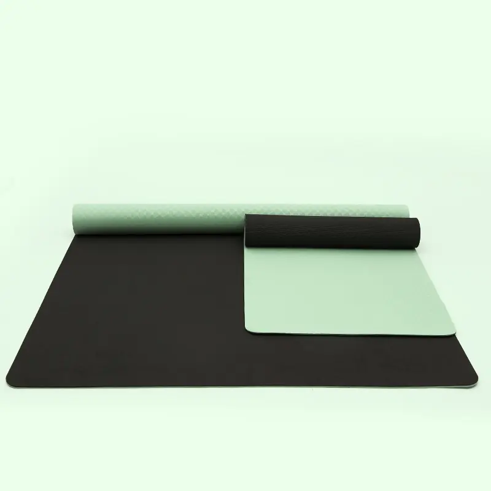

PU의 무광 프로스트 마감 처리된 표면, 우아한 그립감, 격렬한 운동 시 땀을 잘 흡수해 주는 그립감.
| 재료 | 무광 마감 PU + 천연 고무 |
|---|---|
| 크기 | 185×68 cm |
| 두께 | 4.5 mm |
| 무게 | 2900 g/pc |
| 최소 주문 수량(MOQ) | 요청 시 |
| 색상 및 프린트 | 밀크티 / 짙은 회색 / 연한 분홍 / 연보라 / 비취색 |
| 특집 | 미끄럼 방지, 친환경, 내마모성, 무광 표면 |
| 로고 | 레이저 각인 / 스크린 인쇄 / 엠보싱 / UV 인쇄 |
| 규정 준수 | ISO 9001:2015 · RoHS 2.0 시험 완료 · Prop 65 시험 완료 · amfori BSCI 감사 완료(갱신 진행 중) |
| 포장 | 폴리백 + 골판지 상자 또는 고객 맞춤형 포장 |
우아한 촉감과 뛰어난 땀 흡수력을 자랑하는 무광 프로스트 마감의 PU 표면 — 강도 높은 운동을 위해 설계되었습니다.
OEM/ODM 전 과정 지원: 소재, 크기, 두께, 색상, 투톤, 로고 인쇄, 엠보싱 및 포장. 고객사의 사양에 따라 7일 이내에 실물 샘플을 준비해 드립니다.
요가 스튜디오, 헬스장, 핫요가 수업, 자체 브랜드 소매 상품 및 홍보용 사은품으로 이상적입니다.

Eco TPE(단층/이중층), 미끄럼 방지 질감 처리된 표면, 폭 61/66/80/90 cm(24"/26"/31.5"), 두께 6–12 mm(1/4"–1/2"). 솔리드, 이코노미 및 스페셜 등급.

역동적인 연습과 파트너 연습을 위한 초광폭 80/90 cm TPE 매트; 동일한 친환경 이중층 그립 처리.

커플과 가족이 함께 사용하기에 적합한 와이드 사이즈 TPE 매트; 미끄럼 방지 기능이 있으며 청소가 간편합니다.

3단 접이식 디자인으로 펼치면 말리지 않고 평평하게 펼쳐지며, 6 mm (1/4") 두께의 쿠션이 적용되어 있습니다. 휴대성이 뛰어나 배낭에 간편하게 수납할 수 있습니다.